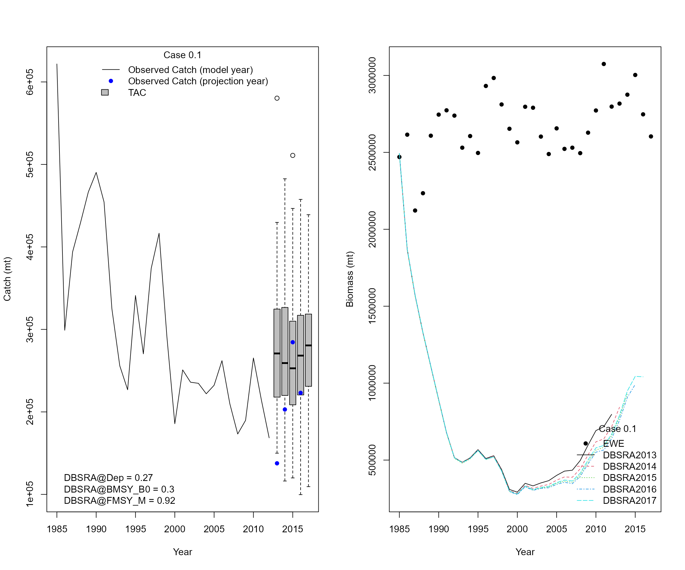
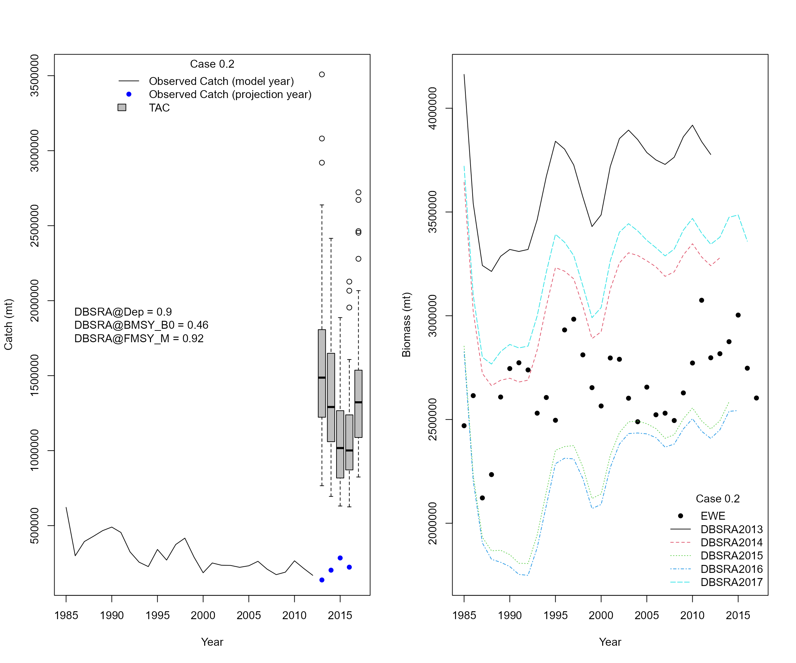
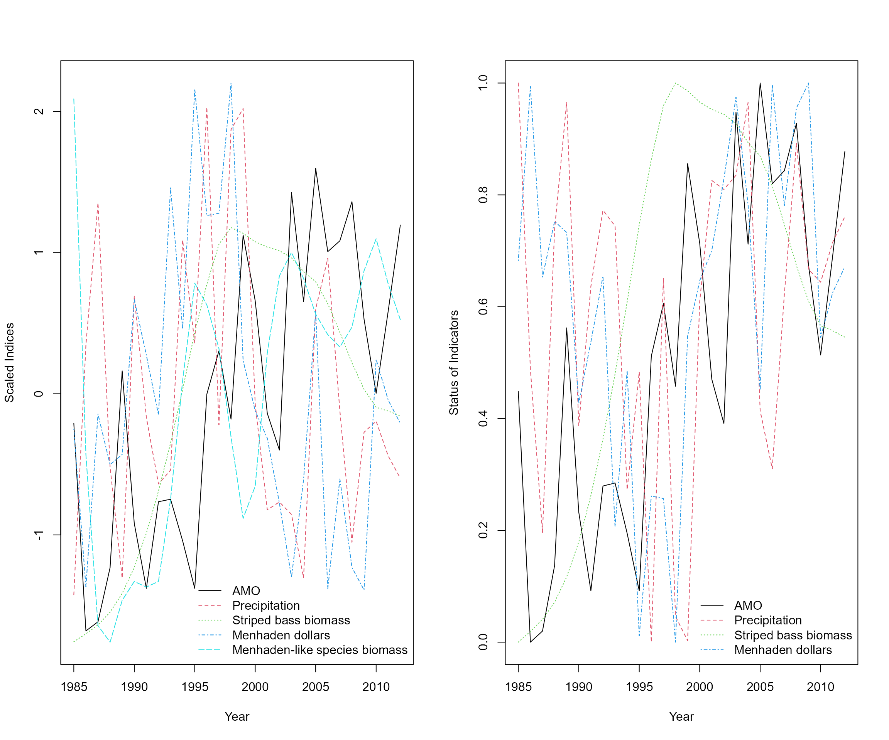
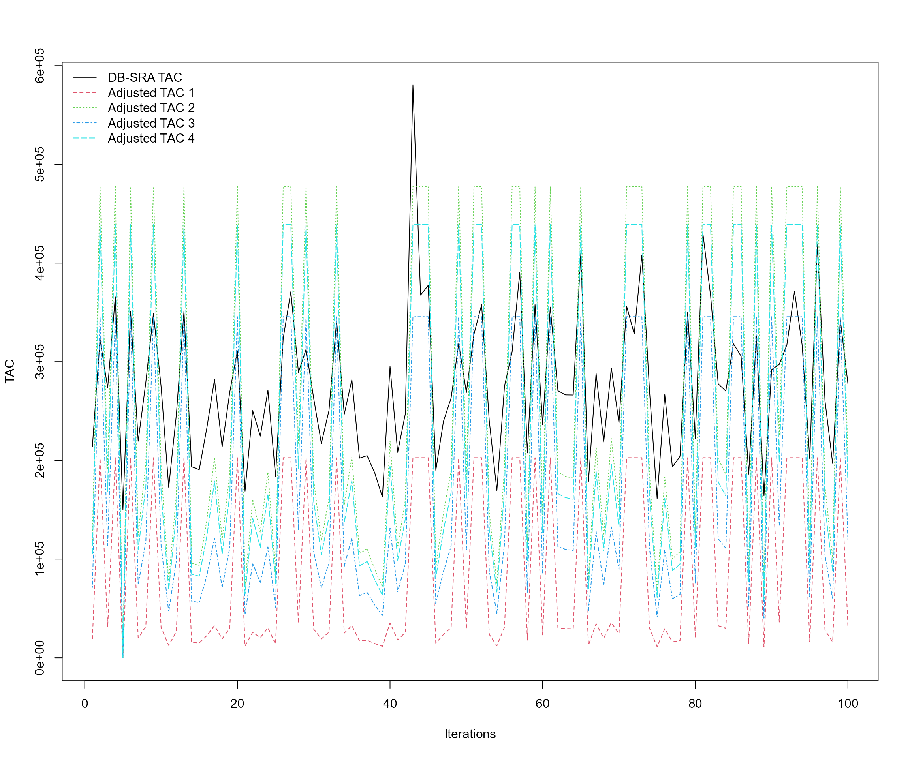
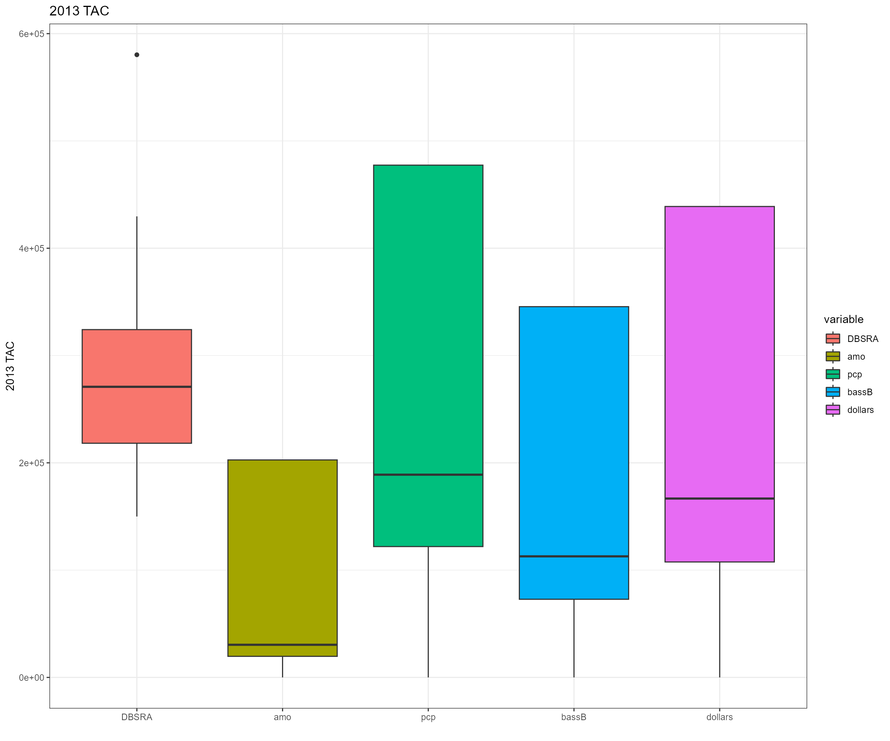

Data-poor stock assessment
Updated on May 11, 2022
06_Data_poor_stock_assessment.RmdDepletion-Based Stock Reduction Analysis(DB-SRA) from DLMtool
-
Case 0: stock assessment base run
- Case 0.1
- Depletion relative to unfished: 0.27 (assume catch is proportional to biomass and use \(catch_{2012}/catch_{1985}\))
- BMSY relative to unfished: 0.3 (based on fecundity target value from Beaufort Stock Assessment report)
- Case 0.1

- Case 0.2
- Depletion relative to unfished: 0.9 based on ballpark values from EwE
- \(B_{MSY}\) relative to unfished: 0.3 (based on fecundity target value from Beaufort Stock Assessment report)

- Cases 1-4 are based on the settings from case 0.1
- Case 1: Link Atlantic Multidecadal Oscillation Index with menhaden biomass estimates and adjust projections: AMO is an indicator of climate conditions and would affect recruitment variability of menhaden-like species
- Case 2: Link precipitation index with menhaden biomass estimates and adjust projections: precipitation alters availability of high-salinity habitat and may affect menhaden-like species through nutrient loading
- Case 3: Link biomass of Striped bass from the EwE with menhaden biomass estimates and adjust projections because bass is a major predator
- Case 4: Link dollars of menhaden with menhaden biomass estimates and adjust projections
- Linear regression models from case 1 - 4
- Using scaled or raw AMO and precipitation values do not make a difference. Here we used raw environmental values
- The quantity of economic data for Atlantic menhaden is low. Here we used economic data for menhaden from New England, Middle Atlantic, and South Atlantic regions
##
## Call:
## lm(formula = menhaden_b ~ amo_unsmooth_lag1$raw_value)
##
## Residuals:
## Min 1Q Median 3Q Max
## -478923 -331866 -45910 112318 1725490
##
## Coefficients:
## Estimate Std. Error t value Pr(>|t|)
## (Intercept) 612396 97673 6.27 1.2e-06 ***
## amo_unsmooth_lag1$raw_value -1400457 536066 -2.61 0.015 *
## ---
## Signif. codes: 0 '***' 0.001 '**' 0.01 '*' 0.05 '.' 0.1 ' ' 1
##
## Residual standard error: 472000 on 26 degrees of freedom
## Multiple R-squared: 0.208, Adjusted R-squared: 0.177
## F-statistic: 6.82 on 1 and 26 DF, p-value: 0.0147##
## Call:
## lm(formula = menhaden_b ~ pcp$raw_value)
##
## Residuals:
## Min 1Q Median 3Q Max
## -458329 -279853 -132201 -19271 1657320
##
## Coefficients:
## Estimate Std. Error t value Pr(>|t|)
## (Intercept) 944015 293624 3.22 0.0035 **
## pcp$raw_value -63902 77714 -0.82 0.4184
## ---
## Signif. codes: 0 '***' 0.001 '**' 0.01 '*' 0.05 '.' 0.1 ' ' 1
##
## Residual standard error: 523000 on 26 degrees of freedom
## Multiple R-squared: 0.0253, Adjusted R-squared: -0.0121
## F-statistic: 0.676 on 1 and 26 DF, p-value: 0.418##
## Call:
## lm(formula = menhaden_b ~ bass_bio$bass_bio)
##
## Residuals:
## Min 1Q Median 3Q Max
## -498894 -110151 18152 81556 1016290
##
## Coefficients:
## Estimate Std. Error t value Pr(>|t|)
## (Intercept) 1.78e+06 1.50e+05 11.84 5.6e-12 ***
## bass_bio$bass_bio -4.54e+00 5.96e-01 -7.61 4.5e-08 ***
## ---
## Signif. codes: 0 '***' 0.001 '**' 0.01 '*' 0.05 '.' 0.1 ' ' 1
##
## Residual standard error: 3e+05 on 26 degrees of freedom
## Multiple R-squared: 0.69, Adjusted R-squared: 0.678
## F-statistic: 57.9 on 1 and 26 DF, p-value: 4.47e-08##
## Call:
## lm(formula = sub_menhaden_b ~ sub_menhaden_dollars)
##
## Residuals:
## Min 1Q Median 3Q Max
## -485234 -350167 -93031 53275 1752243
##
## Coefficients:
## Estimate Std. Error t value Pr(>|t|)
## (Intercept) 1.21e+06 5.49e+05 2.21 0.036 *
## sub_menhaden_dollars -1.44e-02 1.57e-02 -0.92 0.366
## ---
## Signif. codes: 0 '***' 0.001 '**' 0.01 '*' 0.05 '.' 0.1 ' ' 1
##
## Residual standard error: 522000 on 26 degrees of freedom
## Multiple R-squared: 0.0315, Adjusted R-squared: -0.00575
## F-statistic: 0.846 on 1 and 26 DF, p-value: 0.366
Status of indicators from cases 1 - 4 
Adjusted TAC in 2013 from cases 1 - 4 